| Pelican Town | |
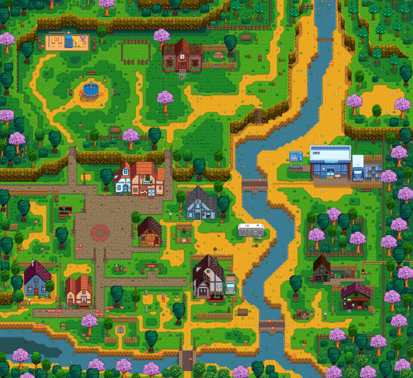 | |
Pelican Town is where the player moves to at the start of the game, located in Stardew Valley. Pelican Town is where most of the villagers live, work, and socialize. Lewis is the mayor of Pelican Town and has been for many years; he comments that he has not had competition for the role since first becoming mayor. The northwest entrance to town connects to the Bus Stop and The Farm. The southwest passage connects to Cindersap Forest, which contains Marnie's Ranch, Leah's Cottage, and the Wizard's Tower. Directly south of town is The Beach. North of town connects to The Mountain, with Robin's carpenter shop, the mines, the Adventurer's Guild, the Railroad, and the Quarry. | |
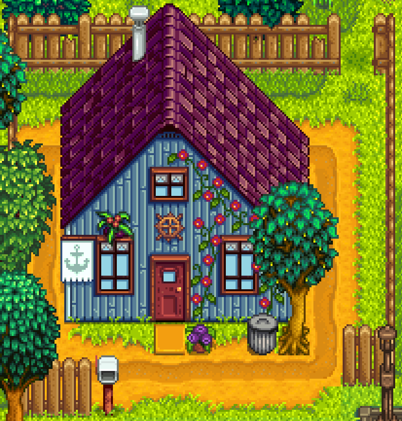 | |
1 Willow Lane is the address of Jodi, Kent, Sam and Vincent. It's the house just next to Pelican Town's southeast passage. The house just next door belongs to Haley and Emily. Initially Kent is away, and the only occupants are Jodi, Sam and Vincent. He returns at the start of the second year. | |
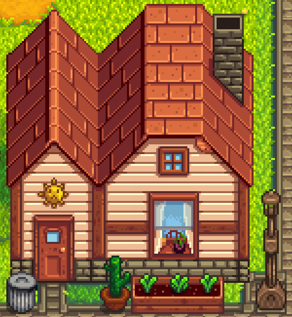 | |
2 Willow Lane is the home of sisters Emily and Haley. It's located along the southern road in Pelican Town, just next to 1 Willow Lane where Jodi and her sons live. The home is owned by Haley and Emily's parents, who have been traveling the world for the past two years with an unknown date of return. Haley and Emily have been caring for the house while they've been away. | |
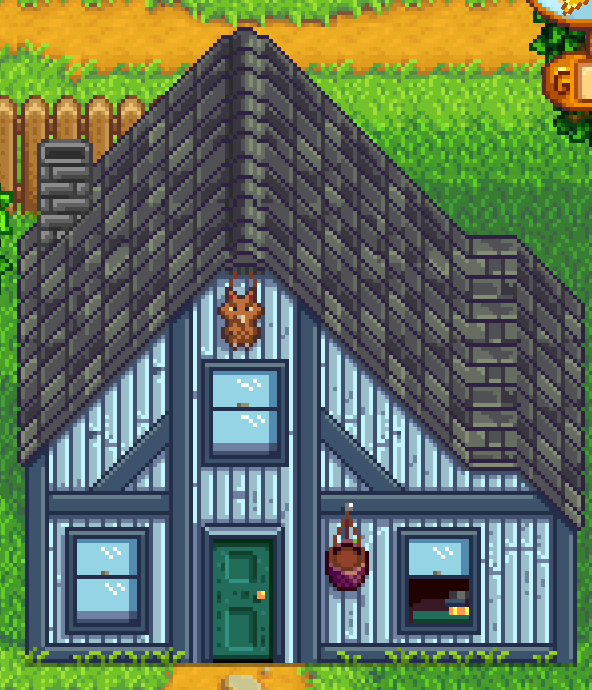 | |
1 River Road is the home of George, Evelyn, and Alex. It's just southeast of Pierre's store and just behind the saloon. | |
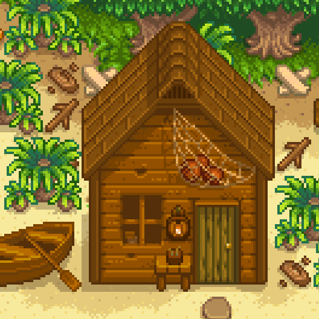 | |
1 River Road is the home of George, Evelyn, and Alex. It's just southeast of Pierre's store and just behind the saloon. | |
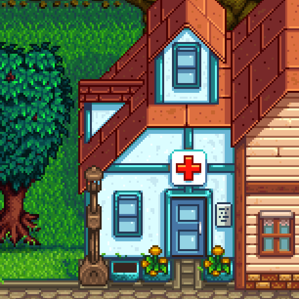 | |
Harvey's Clinic is located in the center of Pelican Town, next to Pierre's General Store. Harvey lives and works at the clinic. Maru occasionally helps him out, despite both complaining about the lack of patients.
Some villagers will visit the clinic for their yearly checkup. | |
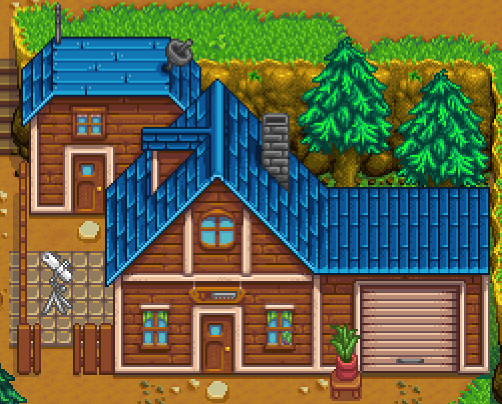 | |
Carpenter's Shop The Carpenter's Shop is located just north of Pelican Town, south of the Backwoods northern path to the farm. Robin is the town carpenter and runs the shop. You can pay her to upgrade your farm, construct new farm buildings, or purchase furniture. Most construction projects are finished in 2 days.
On Tuesday the house is open, but Robin goes to Caroline's house for the afternoon for exercise class so she won't be available. (you can still use the shop when she returns home, even after 5pm)
She also sells/buys wood and stone.
The shop is attached to the home where Robin lives with Demetrius, Sebastian and Maru. | |
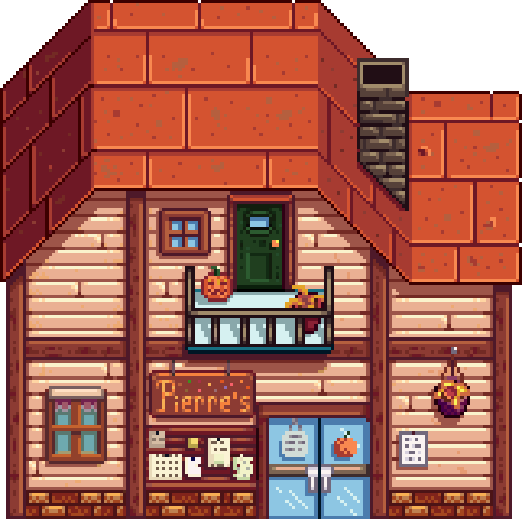 | |
Pierre's General Store is one of the first locations the player will visit in Stardew Valley. It's where you can buy various seeds, saplings, and items. After you have 8 hearts with a single villager, a bouquet of flowers will be available for purchase (however you can only give these to marriage candidates). You can also sell Pierre foraged items and crops if you need instant gold and don't want to wait over night.
Some products in stock will vary from season to season.
You can buy a large amount of an item quickly if you hold Shift and the Right Mouse Button continuously.
Pierre's General Store is normally closed on Wednesday, however if you finish all of the Community Center bundles, Pierre's General Store will be open 7 days a week.
| |
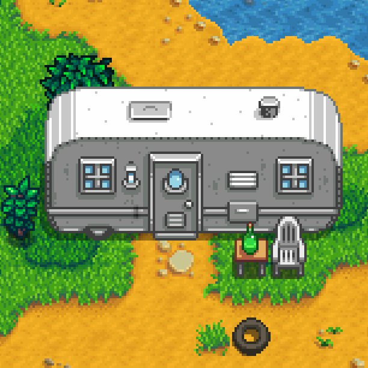 | |
The Trailer is the home of Pam and Penny and is located east of the Saloon and north of the Mayor's Manor. It has two rooms in it: Penny's bedroom (which can be accessed when Penny is at two hearts) and the sitting room/kitchen. If the player examines the bin in the lower right corner of the trailer, they will note that it is full of empty beer bottles. Pam can also be found sitting on the couch in the morning complaining about her head. | |
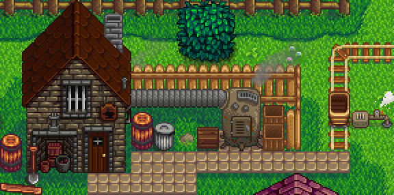 | |
The Blacksmith serves as a location for purchasing ore, upgrading tools and breaking open geodes. It also serves as the home for the blacksmith Clint.
| |
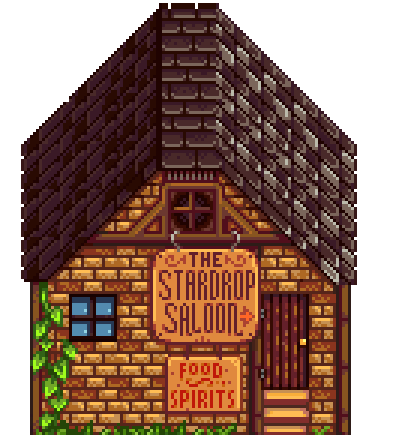 | |
The Stardrop Saloon is owned by Gus, and is located in the center of Pelican Town. It's a meeting place for many villagers, and hosts a variety of entertainment, including fully playable arcade machines, a jukebox, and a Joja Cola soda machine. | |
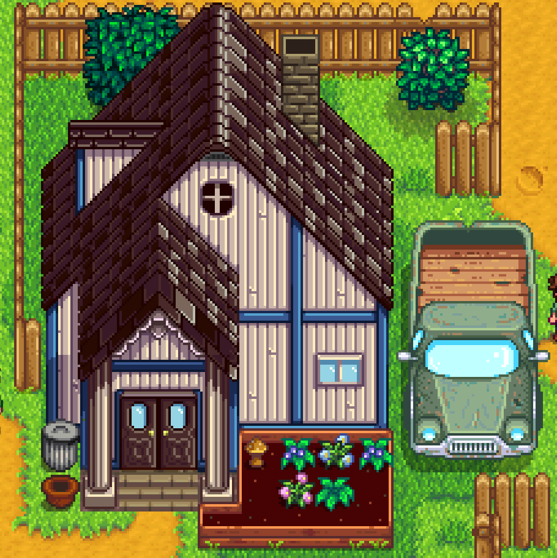 | |
Mayor's Manor is the home of Lewis. It is located east of the graveyard and south of Pam and Penny's trailer, next to the bridge leading to the museum and Blacksmith. Lewis can often be found here either standing at his stove or tending to his garden at the front of the house. | |
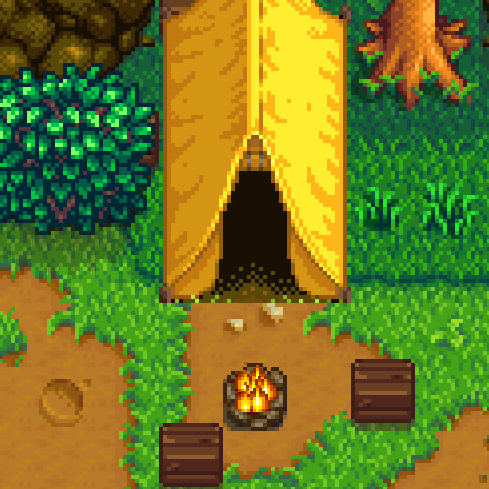 | |
The Tent is located on the Mountain northeast of the Carpenter's Shop and east of the passage to the Railroad. It is the home of Linus who spends much of his day in and around the tent. It is the only 'bedroom' that the player can enter without first gaining friendship points. | |
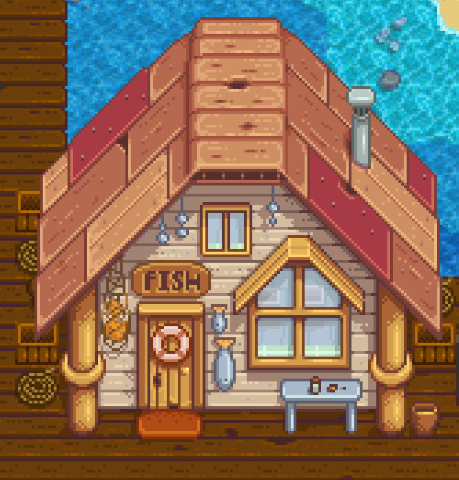 | |
The Fish Shop is the home of Willy. It's located on the docks of the Beach, south of Pelican Town. Willy offers a variety of fishing supplies inside, including rods, bait, tackle and crab pots. More goods become available as the player increases their fishing skill by catching fish, with the Iridium Rod being sold as soon as level 6 skill is obtained, no need to wait the next day. Although the door will unlock, the shop will be closed on a Saturday, unless it is raining. | |